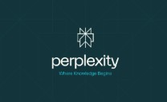
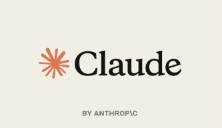
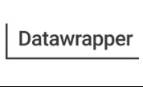
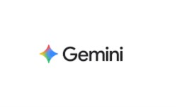
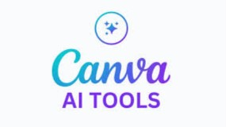

Zastąpieni Zastąpieni (Replaced) Niewidzialna bariera na rynku pracy The invisible barrier on the job market
Mimo rekordowego zatrudnienia w UE (201,6 mln w 2025 r.), sztuczna inteligencja blokuje młodym ludziom start zawodowy. AI eliminuje stanowiska entry-level i zastępuje je rolami wymagającymi seniorskich kwalifikacji — tworząc paradoks, który stał się tematem tego projektu.
Despite record EU employment (201.6 million in 2025), artificial intelligence is blocking young people's career starts. AI eliminates entry-level positions and replaces them with roles requiring senior qualifications — a paradox that became the subject of this project.
Komiks — PDF
Comic — PDF
8-kadrowy komiks „Zastąpieni" opowiadający historię Tomka — młodego absolwenta, który zderza się z niewidzialną barierą automatyzacji. Dane makroekonomiczne zostały wplecione bezpośrednio w przestrzeń narracyjną.
The 8-panel comic "Zastąpieni" (Replaced) tells the story of Tomek — a young graduate colliding with the invisible automation barrier. Macroeconomic data was woven directly into the narrative space.
Uzasadnienie storytellingowe
Storytelling Justification
Projekt „Zastąpieni" miał na celu nadanie ludzkiej twarzy suchym danym makroekonomicznym poprzez zderzenie sprzecznych narracji.
The "Zastąpieni" project aimed to give a human face to dry macroeconomic data through a collision of contradictory narratives.
📍 Zderzenie dwóch narracji
📍 Collision of two narratives
Optimistyczny komunikat o rekordowym zatrudnieniu na wielkim warszawskim billboardzie (panel 1) zderzony z dramatyczną sytuacją Tomka przeglądającego maile odrzuceń w ciemnej kuchni (panel 2). Kontrast ten buduje napięcie i pokazuje, że kryzys młodych to błąd systemowy, a nie osobista porażka.
The optimistic message about record employment on a large Warsaw billboard (panel 1) is collided with Tomek's dramatic situation of reviewing rejection emails in a dark kitchen (panel 2). This contrast builds tension and shows that the youth crisis is a systemic failure, not a personal failure.
📊 Dane wplecione w przestrzeń
📊 Data woven into space
Twarde statystyki wpleciono bezpośrednio w przestrzeń miejską i domową bohatera — dane o wdrażaniu AI przez 86% firm umieszczono na neonach korporacyjnych (panel 3), prognozę likwidacji stanowisk zwizualizowano przez deszcz tworzący na szybie kształt spadającego wykresu (panel 4).
Hard statistics were woven directly into the urban and domestic space of the hero — data about AI adoption by 86% of firms placed on corporate neons (panel 3), the forecast for job elimination visualised through rain forming the shape of a falling graph on a window pane (panel 4).
💬 Kulminacja emocjonalna
💬 Emotional climax
Rozmowa z matką (panel 7) zderza medialny przekaz o „braku rąk do pracy" z bezsilną ripostą Tomka: „Rąk tak. Moich rąk — nie." To jedno zdanie przekłada dane makroekonomiczne na indywidualne doświadczenie wykluczenia.
The conversation with the mother (panel 7) collides the media message about "labour shortage" with Tomek's helpless reply: "Labour yes. My labour — no." This single sentence translates macroeconomic data into an individual experience of exclusion.
❓ Otwarte pytanie retoryczne
❓ Open rhetorical question
Całość zamyka mocne pytanie na tle nocnej panoramy Warszawy (panel 8): „Rekordowe zatrudnienie. Rekordowa liczba odrzuconych automatycznie. Kto liczy tych, których system nigdy nie policzył?" — wywołując empatię i skłaniając do refleksji nad bezdusznością automatyzacji systemów rekrutacyjnych.
The story closes with a powerful question against the Warsaw night skyline (panel 8): "Record employment. Record number automatically rejected. Who counts those the system never counted?" — evoking empathy and prompting reflection on the soullessness of automated recruitment systems.
🎨 Paleta kolorów i nastrój
🎨 Colour palette and mood
Ciepły świt
Warm dawn
Zmierzch
Dusk
Zimna noc
Cold night
Paleta celowo przesuwa się od ciepłego świtu nadziei (billboard z „rekordem zatrudnienia") do zimnych, deszczowych szarości i granatowej nocy — symbolizując rosnące poczucie izolacji i korporacyjnej obojętności, jakiego doświadcza Tomek.
The palette deliberately shifts from a warm dawn of hope (billboard with "record employment") to cold, rainy greys and navy night — symbolising the growing sense of isolation and corporate indifference that Tomek experiences.
Proces pracy z AI
AI Workflow
Projekt realizowano etapowo, z wieloma narzędziami AI pełniącymi odrębne funkcje. Faza generowania obrazu ujawniła istotne ograniczenia darmowych modeli.
The project was carried out in stages, with multiple AI tools serving distinct functions. The image generation phase revealed significant limitations of free-tier models.

1. Badanie źródeł 1. Source researchPerplexity
Zebranie wiarygodnych raportów instytucji (Eurostat, ILO, WEF) na podstawie precyzyjnie skonstruowanego promptu.
Gathering credible reports from institutions (Eurostat, ILO, WEF) based on a precisely constructed prompt.

2. Scenariusz komiksu 2. Comic scriptClaude
Synteza danych z raportów i przekład na strukturę narracyjną 8 kadrów. Opracowanie promptu do generowania obrazów.
Synthesis of report data and translation into an 8-panel narrative structure. Development of image generation prompt.

3. Wizualizacja danych 3. Data visualisationDatawrapper
Generowanie wykresów z danych Eurostat i WEF. Wybrano 3 spośród kilku wariantów wizualizacji.
Generating charts from Eurostat and WEF data. 3 out of several visualisation variants selected.

4. Generowanie obrazu 4. Image generationGemini
Pierwsze próby generowania komiksu. Ograniczone wyniki — brak tytułu, znak wodny, błędy kompozycji.
First comic generation attempts. Limited results — missing title, watermark, composition errors.

5. Generowanie obrazu 5. Image generationCanva AI
Dobra kompozycja, lecz teksty pozostały angielskie. Limit miesięczny osiągnięty przed poprawką.
Good composition, but text remained in English. Monthly limit hit before correction.
ChatGPT
Najlepszy wynik spośród testowanych narzędzi. Prawidłowa implementacja wykresów i polskich tekstów, choć styl zbyt realistyczny.
Best result among tested tools. Correct implementation of charts and Polish text, though style too realistic.
Zebranie źródeł — Perplexity
Source gathering — Perplexity
Na podstawie precyzyjnego promptu wygenerowano listę wiarygodnych raportów instytucji (Eurostat, ILO, WEF). Wyodrębniono kluczowe dane statystyczne.
Based on a precise prompt, a list of credible institutional reports (Eurostat, ILO, WEF) was generated. Key statistical data was extracted.
Scenariusz komiksu — Claude
Comic script — Claude
Claude przeanalizował załączone raporty i przetłożył dane na strukturę narracyjną 8 kadrów z profilem bohatera Tomka, opisem scen i promptem do generowania obrazów.
Claude analysed the attached reports and translated data into an 8-panel narrative structure with Tomek's character profile, scene descriptions, and image generation prompt.
Wizualizacja danych — Datawrapper
Data visualisation — Datawrapper
Dane zaimportowano do Datawrapper i wygenerowano kilka wariantów wykresów. Wybrano 3 wykresy do wplecenia w kadry komiksu.
Data was imported into Datawrapper and several chart variants generated. 3 charts were selected to weave into the comic panels.
Generowanie obrazu — Gemini
Image generation — Gemini
Pierwsze próby z Gemini. Wyniki ograniczone — brak tytułu, znak wodny, błędy implementacji wykresów. Powrót do Gemini po Canvie i Copilot — trzecia iteracja była już bliższa założeniom.
First attempts with Gemini. Limited results — missing title, watermark, chart implementation errors. Return to Gemini after Canva and Copilot — the third iteration was closer to the spec.
Generowanie obrazu — Canva AI, Copilot
Image generation — Canva AI, Copilot
Canva AI: dobra kompozycja, lecz teksty pozostały angielskie — limit miesięczny osiągnięty przed poprawką. Copilot: polskie znaki zastąpione nieczytelnym ciągiem — całkowicie nieskuteczny.
Canva AI: good composition, but text stayed in English — monthly limit hit before correction. Copilot: Polish characters replaced by unreadable strings — completely ineffective.
Generowanie obrazu — ChatGPT
Image generation — ChatGPT
Najlepszy wynik spośród testowanych narzędzi. Prawidłowa implementacja wykresów i polskich tekstów. Wada: styl zbyt fotograficzny zamiast komiksowego.
Best result among tested tools. Correct implementation of charts and Polish text. Flaw: style too photographic rather than comic-book.
⚠ Napotkane problemy z narzędziami
⚠ Tool problems encountered


Użyte prompty
AI & Image Generation Prompts Used
Projekt wymagał trzech rodzajów promptów: do zebrania danych źródłowych, do stworzenia scenariusza komiksu oraz do generowania ilustracji.
The project required three types of prompts: for gathering source data, for creating the comic script, and for generating illustrations.
Ewolucja projektu
Project Evolution
Kolejne iteracje komiksu generowane różnymi narzędziami AI. Kliknij miniaturę, aby powiększyć.
Successive comic iterations generated with different AI tools. Click a thumbnail to enlarge.


Lista źródeł
Sources with Credibility Assessment
Wszystkie dane statystyczne użyte w projekcie pochodzą z oficjalnych raportów instytucji publicznych lub think-tanków o uznanym autorytecie. Poniżej ocena każdego źródła.
All statistical data used in the project come from official reports of public institutions or established think-tanks. Below is an assessment of each source.
Eurostat — Urząd Statystyczny Unii Europejskiej
Eurostat — Statistical Office of the European Union
Oficjalna instytucja unijna przetwarzająca zharmonizowane dane dostarczane bezpośrednio przez urzędy statystyczne wszystkich krajów członkowskich (w tym polski GUS). Dane wolne od komercyjnych nacisków, podlegają rygorystycznym kryteriom prawnym. Użyte dane: zatrudnienie UE-27 — 201,6 mln (2025), wykres trendu 2016–2025.
Official EU institution processing harmonised data supplied directly by the statistical offices of all member states (including Poland's GUS). Data free from commercial pressures, subject to strict legal criteria. Data used: EU-27 employment — 201.6 million (2025), trend chart 2016–2025.
↗ ec.europa.eu/eurostatILO — International Labour Organization / Międzynarodowa Organizacja Pracy
Wyspecjalizowana agencja ONZ zajmująca się problematyką pracowniczą. Raporty uznawane za globalny autorytet — opierają się na danych z ponad 180 krajów tworzonych przez niezależnych ekspertów we współpracy z rządami, związkami zawodowymi i pracodawcami. Brak komercyjnych bodźców. Użyte dane: prognozy likwidacji stanowisk entry-level, bezrobocie młodzieży.
Specialised UN agency on labour matters. Reports regarded as global authority — based on data from 180+ countries, created by independent experts in cooperation with governments, trade unions, and employers. No commercial incentives. Data used: forecasts for entry-level job elimination, youth unemployment.
↗ ilo.orgWEF — World Economic Forum / Światowe Forum Ekonomiczne
Fundacja lobbingowa zrzeszająca biznes (organizator forum w Davos). Raporty nie tworzą twardych statystyk państwowych, ale badają nastroje rynkowe — ankietują tysiące prezesów największych firm, pokazując realne plany wdrożenia AI. Ograniczenie: perspektywa korporacyjna. Użyte dane: 86% firm wdraża AI do 2030, +11 mln ról senior, prognoza umiejętności.
A lobbying and business-membership foundation (organiser of Davos). Reports do not produce hard state statistics but survey market sentiment — surveying thousands of CEOs of the world's largest firms, revealing real AI deployment plans. Limitation: corporate perspective. Data used: 86% of firms adopting AI by 2030, +11M senior roles, skills forecast.
↗ Future of Jobs Report 2025OECD — Employment Outlook
Organizacja Współpracy Gospodarczej i Rozwoju — roczny raport o rynku pracy w 38 krajach OECD. Dane oparte na ujednoliconych metodologiach porównawczych, niezależna metodologia od krajów członkowskich. Użyte dane: kontekst zmian strukturalnych zatrudnienia, presja automatyzacji na zawody administracyjne.
Organisation for Economic Co-operation and Development — annual report on the labour market in 38 OECD countries. Data based on standardised comparative methodologies, independent from member states. Data used: context of structural employment changes, automation pressure on administrative occupations.
↗ OECD Employment Outlook